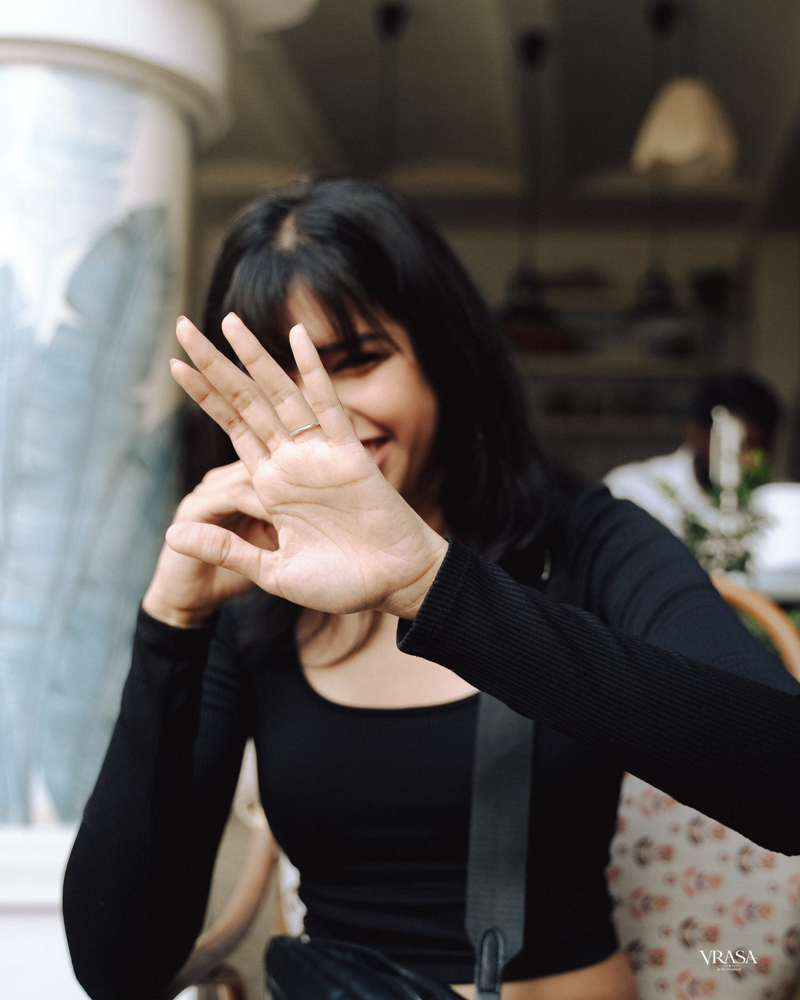
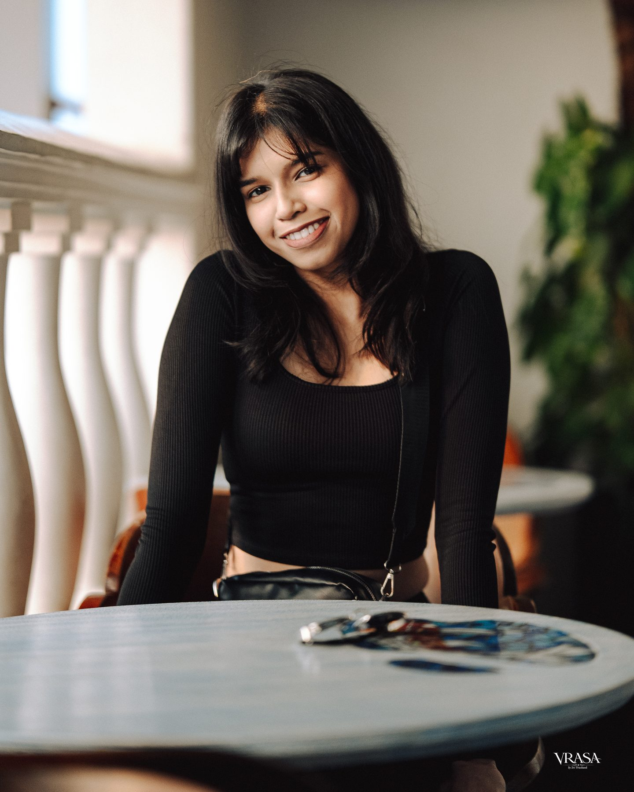
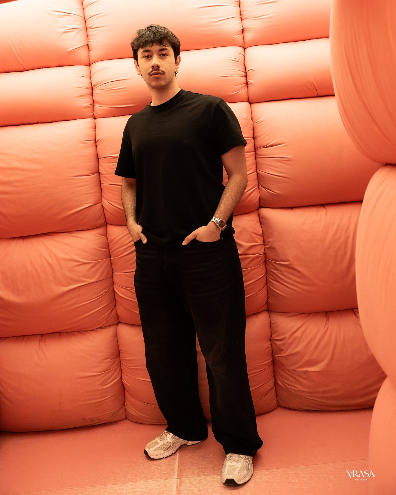
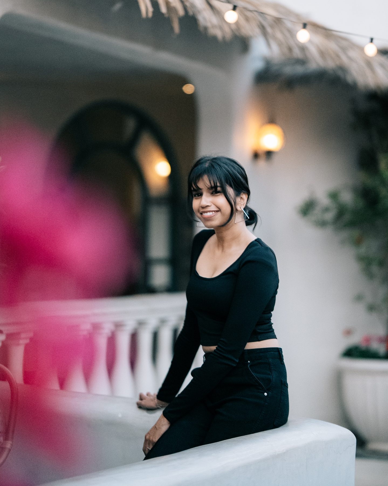

01 · Portraits
01 · Portraits
Studio, I.
20 frames · Clean light, precise lines
VRASA · Vol. 07
01 · Portraits
20 frames · Clean light, precise lines

02 · Portrait26 frames · On-location
 03 · Portrait
03 · Portrait
20 frames

04 · Portrait26 frames

05 · Portrait20 frames

06 · Portrait26 frames